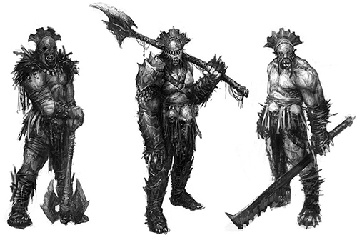

Hobbits Merry and Pippin escape from the Orcs who captured them when the orcs themselves are attacked by the Riders of Rohan. Merry and Pippin head into nearby Fangorn Forest where they encounter treelike giants called Ents.
The forest generally keep to themselves, but are moved to oppose the menace posed to the trees by the wizard Saruman, who has been chopping down trees in the forest to fuel fires for his furnaces.
Aragorn, Gimli the Dwarf and Legolas the Elf, tracking Merry and Pippin, come across the Riders of Rohan who tell them that they attacked the orcs the previous night and left no survivors. However, Strider is able to find small prints and they follow these into Fangorn, where they meet a white wizard who they at first believe to be Saruman, but who turns out to be their wizard friend Gandalf, whom they believed had perished in the mines of Moria.
He tells them of his fall into the abyss, his battle to the death with the Balrog and his reawakening. The four ride to Edoras and persuade King Théoden that his people are in danger. In the process, Saruman's agent in Edoras, Grima Wormtongue, is expelled from the city. Aragorn, Gimli and Legolas then travel to the defensive fortification Helm's Deep while Gandalf goes north in search of Erkenbrand's men to bring as reinforcements. At Helm's Deep, they resist an onslaught of Orcs and Men sent by Saruman, and Gandalf arrives the next morning with the Westfold army led by Erkenbrand just in time. The fleeing orcs run into a forest of Huorn half-tree, half-ent creatures and none escape. Aragorn, Gimli, Legolas, Gandalf and the Rohirric army then head to Saruman's stronghold in Isengard.
There, they reunite with Merry and Pippin and find the city overrun by Ents, who have flooded it with the nearby river, and the central tower of Orthanc besieged, with Saruman in it. After giving Saruman a chance to repent, Gandalf casts him out of the order of wizards. Wormtongue throws something from a window at Gandalf and those with him. This turns out to be one of the palantíri. Pippin, unable to resist the urge, looks into it and has an encounter with Sauron. Gandalf and Pippin then head for Minas Tirith in preparation for the upcoming war.
Chapters

Uruk-Hai Concept
Chapters:
I: The Departure of Boromir:
Aragorn finds Boromir hit with many arrows, who tells him that orcs took Merry and Pippin, and that they were still alive. Boromir dies, and his body is set down the stream on a 'funeral boat'; Aragorn, Legolas and Gimli decide to follow the orcs who had captured Merry and Pippin, rather than following Frodo and Sam. The three of them set off to chase the orcs.
II: The Riders of Rohan:
They follow the trail of the orcs and find several clues as to what happened with the hobbits, then meet a company of Rohirrim led by Éomer, who tell them that the orcs were destroyed and none were left alive. They camp near the site of the orc massacre.
III: The Uruk-hai:
This chapter begins further back in time, telling the story of Merry and Pippin being captured by the orcs, who are led by Ugluk from Saruman's army, and Grishnakh from Mordor. The two sides of orcs are constantly arguing. The orcs camp near Fangorn and Grishnakh attempts to take the hobbits away with him. The hobbits escape as Grishnakh is killed by an arrow. They flee into Fangorn Forest as the men of Rohan attack the orcs.
IV: Treebeard:
Merry and Pippin meet Treebeard the Ent, who calls an Entmoot, a gathering of Ents in Derndingle. The hobbits meet another ent, Quickbeam. After three days of deliberation, the ents decide at the entmoot to attack Isengard.
V: The White Rider:
The chapter goes back to the story of Aragorn, Legolas and Gimli, who discover signs that the hobbits escaped the orcs into the forest. They meet an old man, who they at first presume to be Saruman, but who turns out to be Gandalf. They set off for Edoras.
VI: The King of the Golden Hall:
The four of them reach Edoras and talk with King Theoden. Wormtongue is thrown out of the city. Theoden gives Gandalf the horse Shadowfax.
VII: Helm's Deep:
Aragorn, Legolas and Gimli are at Helm's Deep with the Rohan army, defending the people of Rohan from attack by the army of Saruman.
VIII: The Road to Isengard:
They travel to Isengard, and see that it has been destroyed. At Isengard they find Merry and Pippin.
IX - Flotsam and Jetsam - Merry and Pippin tell the story of how the ents attacked Isengard, in amongst the ruins or 'flotsam and jetsam' of the city.
X: The Voice of Saruman:
Saruman has a very persuasive voice, which he almost uses to persuade Theoden and the others until Gandalf casts him from the order of wizards. Wormtongue throws the Palantír of Orthanc from the tower, which misses Gandalf, and is picked up by Pippin.
XI: The Palantir:
Pippin picks up the Palantír and is seen by Sauron. Gandalf explains the origin of the Palantír; Gandalf sets off with Pippin for Minas Tirith, riding on Shadowfax.
ISENGARD OVERLOOK
Book IV: The Journey of the Ringbearers / The Ring Goes East
Frodo and Sam discover Gollum stalking them as they try to reach Mount Doom to destroy the One Ring. Gollum hopes to reclaim the Ring. Sam loathes and distrusts him, but Frodo pities him. Gollum promises to lead them to a secret entrance to Mordor and for a time appears to be a true ally.
They first stop at the Black gate of Mordor, where Gollum persuades them not to go in, where they would surely have been caught. They head south into Ithilien, and are captured by Faramir, the brother of Boromir. Faramir learns from Frodo of his brother's death and the plan to destroy the ring, and eventually allows them to go on their way. Gollum leads them into the lair of Shelob, an enormous spider-like creature, who inflicts her poisonous bite on Frodo. Sam resolves to finish the quest himself and takes the Ring.
However, when Orcs take Frodo's body, he follows them and learns that Frodo is not dead but unconscious and now their prisoner. The last line of the book is "Frodo was alive but taken by the enemy."
Chapters:
I: The Taming of Sméagol:
Gollum joins Frodo and Sam, after Sam captures him.
II: The Passage of the Marshes:
They pass through the Dead Marshes.
III: The Black Gate is Closed:
They reach the gate of Mordor, Gollum persuades them not to go in, and they head south.
IV:Of Herbs and Stewed Rabbit:
They reach the pleasant country of Ithilien. Title refers to the rabbits Gollum catches that Sam cooks; the smoke from the fire causes them to be seen by men of Gondor led by Faramir, and they witness an attack on a Southron army, and an Oliphaunt.
V: The Window on the West:
Frodo and Sam are captured by Faramir's men and they are blindfolded on their way to Henneth Annûn. Frodo and Faramir discuss Boromir's death.
VI: The Forbidden Pool:
Faramir shows Frodo they have found Gollum at the Forbidden pool. Frodo saves him from being shot by Faramir's men.
VII: Journey to the Cross-roads:
Frodo, Sam and Gollum leave Faramir. They travel to the crossroad of the road east between Osgiliath and Minas Morgul, and the north-south road from the Black Gate to the southlands.
VIII: The Stairs of Cirith Ungol:
They witness an army leaving Minas Morgul.
IX: Shelob's Lair:
Encounter with Shelob the spider.
X: The Choices of Master Samwise:
Frodo is taken by the orcs. Sam listens to the orcs talking about him, which is how he finds out that he is still alive (he had thought that Shelob had killed Frodo).